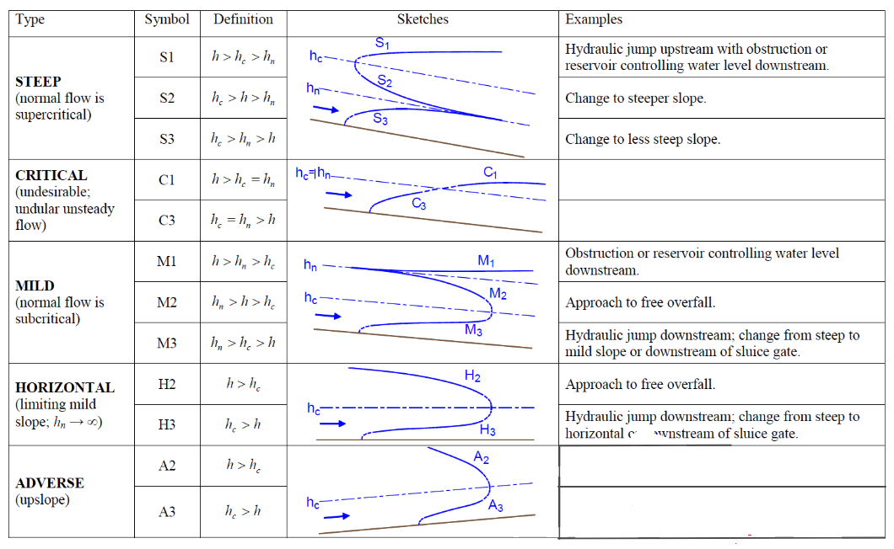
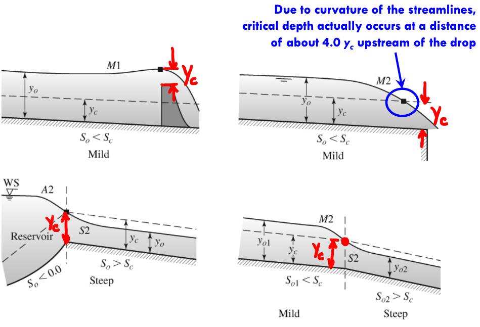

Gradually Varied Flow (GVF)¶
Steady non-uniform flow in a prismatic channel with gradual changes in its water surface elevation
For example,
backwater produced by a dam or weir across a river
drawdown produced at a sudden drop in a channel
In gradually varied flow (GVF)
velocity varies along the channel
bed slope, water surface slope, and energy slope will all differ from each other
Note
Bottom slope \(S_0\) changes from one reach to the next, but is constant within a particular reach. (i.e. no slope change within a reach). In practice the slope changes are used to help delineate reaches.
Two basic assumptions in GVF analysis
Pressure distribution at any section is assumed to be hydrostatic
Gradual changes in the surface curvature give rise to negligible normal accelerations
Resistance to flow at any depth is assumed to be given by the corresponding uniform flow equation, such as the Manning’s formula with the condition that the slope term to be used in the equation is intended to be the energy slope (\(S_f\)) and not the bed slope
where \(\alpha=1\) (SI units) and \(\alpha=1.485\) (US customary units).
Differential Equation of the Water Surface¶
Recall from our specific energy discussion the various components of the Modified Bernoulli’s equation for an open channel

The total head at any cross section is (taking \(\alpha\) as unity for some visual simplicity)
The slope of the EGL is something like
Note
The minus sign because energy is decreasing in the +x direction
Substitute in some geometry to get into a discharge form (which is often more useful!)
Now make some observations: the slope of the EGL is the friction slope, and the last term is the channel slope at that location.
Calculus the … on the middle term with \(Q\)
Recall \(\frac{dA_i}{dy}\) is just the topwidth at the section
A wee bit of algebra
Observe the term in parenthesis is \(1-Fr_i^2\)
So the expression becomes (dropping the \(_i\) subscript
And we have an ordinary differential equation of the water surface. A plot of a particular solution, \(y(x)\) is called the water surface profile.
Classification of Water Surface Profiles¶
Process of identification of possible flow profiles as a prelude to quantitative computations
As \(y \rightarrow y_n\), \(\frac{dy}{dx} \rightarrow 0\) , i.e. the water surface approaches the normal depth line asymptotically.
As \(y \rightarrow y_c\), \(\frac{dy}{dx} \rightarrow \infty\), i.e. the water surface meets the critical depth line vertically.
High curvatures at critical depth zones violate the assumption of gradually-varied nature of the flow,
thus GVF computations have to begin or end a short distance away from the critical-depth location.

Control Sections¶
Section in which a fixed (unique?) relationship exists between the discharge and depth of flow.
Weirs, spillways sluice gates are some typical examples of structures which give rise to control sections.
Critical depth is also a control point.
It is effective in a flow profile which changes from subcritical to supercritical flow. Such
Control sections provide a key to the identification of proper profile shapes.
Subcritical flows have controls in the downstream end
Supercritical flows have controls in the upstream end
The direction of computation of subcritical profiles is upstream, and for supercritical, it is downstream.
